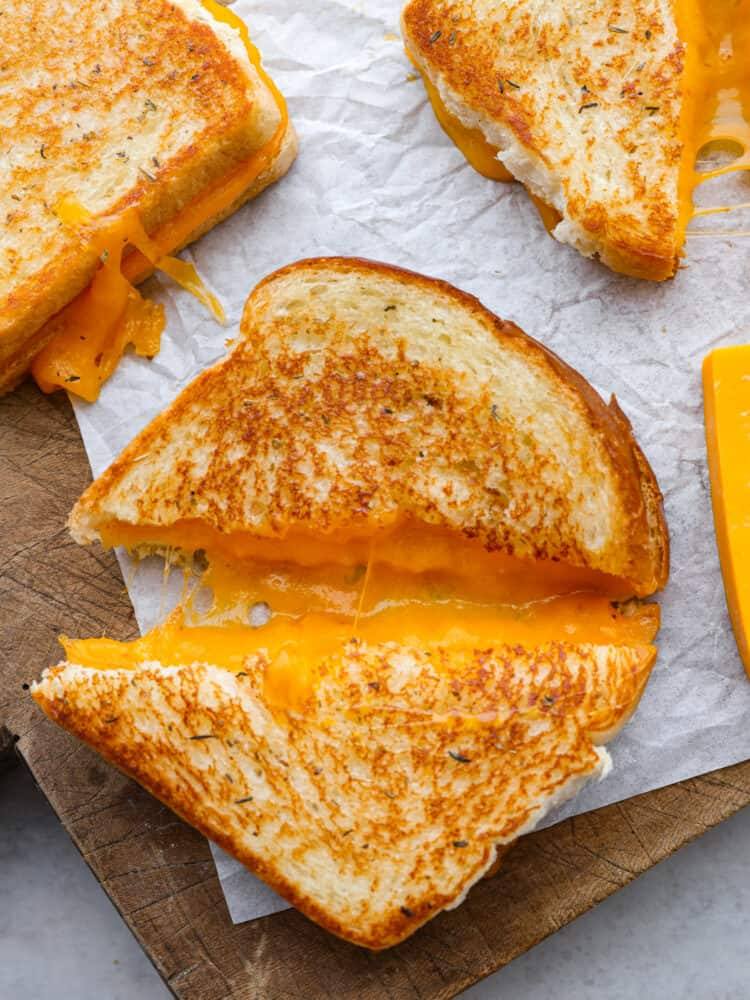

Back to index
Grilled Cheese Sandwich

Ingredients
- 8 slices of white bread
- lots of cheese
- a few tablespoons of mayo
- a pinch of garlic powder, italian seasoning and coarse salt
Steps
- Combine the mayo, garlic powder, italian seasoning and salt in a small bowl, stir until smooth
- Preheat a skillet/griddle pan over medium heat
- Spread the mayo evenly on each slice of the bread, one side, and lay out on the pan
- top with cheese, cover with another slice of bread, mayo side out
- Cook on each side until golden brown, approx 4-6 minutes
- Voila, a grilled cheese lmao